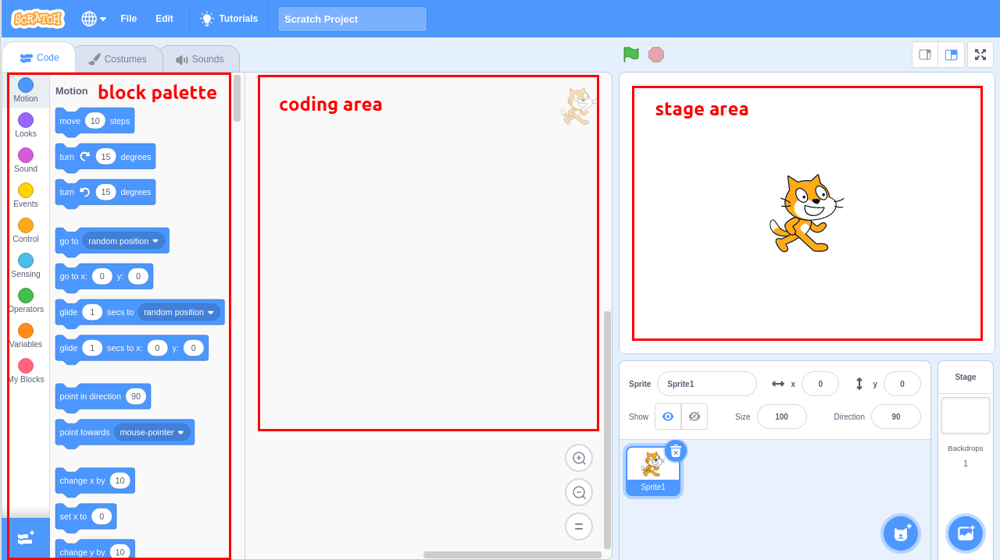
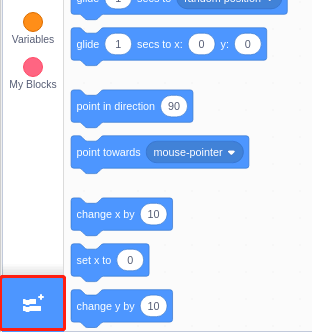
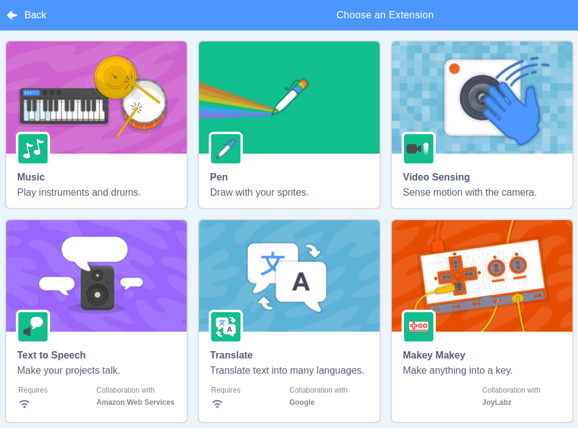

Nota
¡Hola! Bienvenido a la comunidad de entusiastas de SunFounder para Raspberry Pi, Arduino y ESP32 en Facebook. Únete a otros apasionados y profundiza en el mundo de Raspberry Pi, Arduino y ESP32.
¿Por qué unirte?
Soporte Experto: Resuelve problemas posventa y supera desafíos técnicos con el apoyo de nuestra comunidad y equipo.
Aprende y Comparte: Intercambia consejos y tutoriales para mejorar tus habilidades.
Acceso Exclusivo: Obtén acceso anticipado a anuncios de nuevos productos y adelantos especiales.
Descuentos Especiales: Disfruta de descuentos exclusivos en nuestros productos más recientes.
Promociones Festivas y Sorteos: Participa en sorteos y promociones durante las festividades.
👉 ¿Listo para explorar y crear con nosotros? Haz clic en [Aquí] y únete hoy.
Guía Rápida sobre Scratch
Nota
Cuando programes con Scratch 3, puede que necesites una pantalla para una mejor experiencia. Por supuesto, si no tienes una pantalla, también puedes usar VNC para acceder al escritorio de Raspberry Pi de forma remota. Para un tutorial detallado, consulta VNC.
Además, Scratch 3 necesita al menos 1 GB de RAM para funcionar, y recomendamos una Raspberry Pi 4 con al menos 2 GB de RAM. Aunque es posible ejecutar Scratch 3 en una Raspberry Pi 2, 3, 3B+ o una Raspberry 4 con 1 GB de RAM, el rendimiento en estos modelos se ve reducido, y dependiendo del software que se ejecute al mismo tiempo, Scratch 3 podría no iniciarse por falta de memoria.
Instalación de Scratch 3
Al instalar Raspberry Pi OS (Instalación del Sistema Operativo), debes elegir la versión con escritorio, ya sea solo escritorio o escritorio con software recomendado.
Si instalas la versión con software recomendado, puedes ver Scratch 3 en el menú del sistema en Programación.
Si instalaste solo la versión de escritorio, deberás instalar Scratch 3 manualmente, como se describe a continuación.
Abre el menú, haz clic en Preferencias -> Software Recomendado.

Encuentra Scratch 3 y márcalo, luego haz clic en Aplicar y espera a que finalice la instalación.

Una vez completada la instalación, deberías verlo en Programación en el menú del sistema.

Acerca de la Interfaz de Scratch 3
Scratch 3 está diseñado para ser divertido, educativo y fácil de aprender. Incluye herramientas para crear historias interactivas, juegos, arte, simulaciones y más, utilizando programación basada en bloques. Scratch también tiene su propio editor de pintura y editor de sonido integrados.
En la parte superior de Scratch 3 encontrarás algunas opciones básicas. La primera, de izquierda a derecha, es la opción de idioma, donde puedes elegir el idioma de programación. La segunda es la opción Archivo, que te permite crear archivos nuevos, leer archivos locales y guardar los archivos actuales. La tercera es la opción Editar, que permite recuperar algunas operaciones de eliminación y habilitar el modo de aceleración (en el cual el movimiento del sprite se vuelve particularmente rápido). La cuarta es la opción Tutoriales, que permite ver tutoriales de algunos proyectos. La quinta es la opción para nombrar archivos, donde puedes renombrar el proyecto.

Código
Consta de tres secciones principales: un área de escenario, paleta de bloques y área de programación. Se programa haciendo clic y arrastrando bloques desde la paleta de bloques al área de programación, y el resultado de la programación se mostrará en el área de escenario.
Aquí está el área de sprites de Scratch 3. Encima de esta área están los parámetros básicos de los sprites, puedes añadir sprites que vienen con Scratch 3 o subir sprites locales.

Esta es el área de fondos de Scratch 3, principalmente para añadir un fondo adecuado a tu escenario. Puedes añadir el fondo que viene con Scratch 3 o cargar uno local.

Este es el botón Añadir Extensión.
En Scratch 3, podemos añadir todo tipo de extensiones útiles. Aquí tomamos Detección de Video como ejemplo y hacemos clic en ella.
Lo verás en la paleta de bloques y podrás utilizar las funciones asociadas a esta extensión. Si tienes una cámara conectada, verás la pantalla de la cámara en el área del escenario.

Disfraces
Haz clic en la opción Disfraces en la esquina superior izquierda para entrar en la paleta de disfraces. Diferentes disfraces permiten que los sprites tengan movimientos estáticos distintos, y cuando estos movimientos estáticos se unen, forman un movimiento dinámico coherente.

Sonidos
Quizás necesites usar algunos clips de música para hacer que tus experimentos sean más interesantes. Haz clic en la opción Sonidos en la esquina superior izquierda y podrás editar el sonido actual o seleccionar/subir uno nuevo.